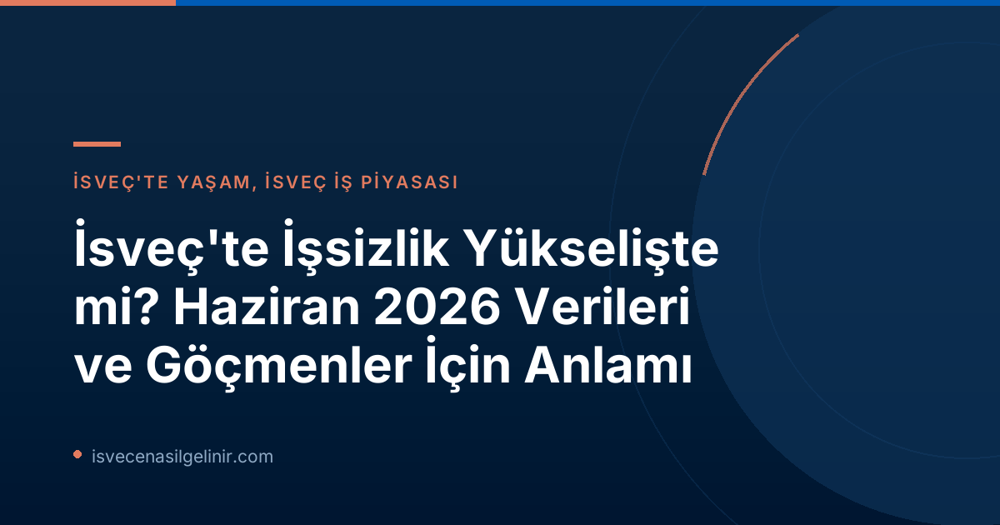

Haziran 2026 İsveç İşsizlik Rakamları: Detaylı Bakış
İsveç İstatistik Kurumu (SCB) tarafından yayımlanan son verilere göre, İsveç iş piyasasında Haziran 2026 itibarıyla aşağıdaki önemli göstergeler kaydedilmiştir:
| Veri Kalemi | Haziran 2026 | Haziran 2025 |
|---|---|---|
| Toplam İşsizlik Oranı | %9.9 | %9.4 |
| Mevsimsellikten Arındırılmış İşsizlik Oranı | %8.7 | Açıklanmadı |
Bu tablo, genel işsizlik oranının bir önceki yıla göre %0.5 puan artarak %9.9 seviyesine yükseldiğini göstermektedir. Ancak mevsimsellikten arındırılmış ve dengelenmiş verilere göre işsizlik oranı %8.7 olarak kaydedilmiştir. Bu durum, piyasadaki dönemsel dalgalanmaların etkisinin daha düşük olduğunu ancak genel işsizlik seviyesinin yine de yüksek kaldığını ortaya koymaktadır.
İşsizlik Oranlarındaki Artış Neye İşaret Ediyor?
SCB istatistikçisi Ludvig Renberg'in açıklamasına göre, işsizlik oranları yüksek seyrini korumaya devam etmektedir. Ancak dikkat çekici bir diğer nokta ise, mevsimsellikten arındırılmış ve dengelenmiş verilerde geçici istihdamda artış görülmesidir. Bu durum, şirketlerin uzun vadeli pozisyonlar yerine daha esnek ve kısa süreli işgücü alımına yöneldiğini düşündürmektedir. Ekonomik belirsizlikler veya sektör bazlı değişimler, bu tür istihdam modellerinin tercih edilmesinde etkili olabilir.
İsveç'e Göçmenler ve İş Arayanlar İçin Anlamı
İsveç ekonomisindeki bu dalgalanmalar, ülkeye gelmeyi veya burada iş bulmayı planlayan uluslararası yetenekler ve göçmenler için bazı önemli çıkarımlar sunmaktadır:
- Artan Rekabet: Genel işsizlik oranının yükselmesi, açık pozisyonlar için rekabetin de artabileceği anlamına geliyor. Özellikle düşük nitelikli veya İsveççe dil yeterliliği gerektirmeyen pozisyonlarda bu durum daha belirgin hissedilebilir.
- Geçici İstihdam Fırsatları: Geçici istihdamdaki artış, özellikle yeni gelenler için iş piyasasına giriş kapısı olabilir. Bu tür pozisyonlar, İsveç iş kültürüne adapte olmak, network oluşturmak ve dil pratiği yapmak için değerli deneyimler sunabilir. Ancak kalıcı bir pozisyona geçiş stratejisi belirlemek önemlidir.
- Dil ve Nitelik Önemi: İsveç iş piyasasında rekabet edebilirliklerini artırmak isteyenlerin, İsveççe dil yeterliliklerini geliştirmeleri ve talep gören sektörlerdeki mesleki niteliklerini güncel tutmaları kritik öneme sahiptir.
İsveç vatandaşlığı yolunda ilerlerken, İsveç Vatandaşlık Sınavı hakkında güncel bilgilere ulaşmak için sitemizi ziyaret edebilirsiniz.
İsveç İş Piyasasında Geçici İstihdamın Rolü
Geçici istihdam, İsveç işgücü piyasasının önemli bir parçasıdır. Mevcut verilerin geçici çalışan sayısında bir artış göstermesi, işverenlerin değişen pazar koşullarına daha hızlı adapte olmak için esnek işgücü çözümlerine yöneldiğinin bir göstergesidir. Bu, bir yandan iş arayanlara hızlıca iş bul ma imkanı sunarken, diğer yandan iş güvencesi konusunda belirsizlikler yaratabilir. Geçici işlerde edinilen deneyim ve referanslar, uzun vadeli istihdam arayışınızda güçlü bir temel oluşturabilir.
Geleceğe Yönelik Beklentiler ve Tavsiyeler
İsveç iş piyasasındaki bu dinamikleri göz önünde bulundurarak, iş arayanların proaktif bir yaklaşım sergilemeleri önemlidir. İşte dikkate almanız gereken bazı tavsiyeler:
- Güncel Kalın: İsveç iş piyasası trendlerini, hangi sektörlerin büyüdüğünü ve hangi becerilerin talep edildiğini düzenli olarak takip edin.
- Dil Becerilerinizi Geliştirin: İsveççe, birçok pozisyonda temel bir gereksinimdir. Dil kurslarına katılın veya günlük hayatta pratik yapın.
- Ağ Oluşturun: Profesyonel bağlantılar kurmak, genellikle iş bulmanın en etkili yollarından biridir. Sektörel etkinliklere katılın ve online platformlarda aktif olun.
- Esnek Olun: Başlangıçta tam zamanlı ve kalıcı bir pozisyon bulmak zor olabilir. Geçici veya proje bazlı işlere açık olmak, deneyim kazanmanıza ve kapıları aralamanıza yardımcı olabilir.
- Resmi Kaynakları Kullanın: İsveç İş ve İşçi Bulma Kurumu (Arbetsförmedlingen) gibi resmi kurumların web sitelerini ve sunduğu hizmetleri aktif olarak kullanın.
Referanslar:
[Kaynak: SVT Nyheter Inrikes](https://www.svt.se/nyheter/inrikes/scb-arbetslosheten-kvar-pa-hogre-niva)
İsveç'te Kariyer Yolculuğunuza Başlayın!
İsveç iş piyasasında doğru adımları atmak ve hayalinizdeki kariyere ulaşmak için rehberliğimize güvenin. İş başvuru süreçleri, oturum izinleri ve İsveç yaşamı hakkında daha fazla bilgi edinin.